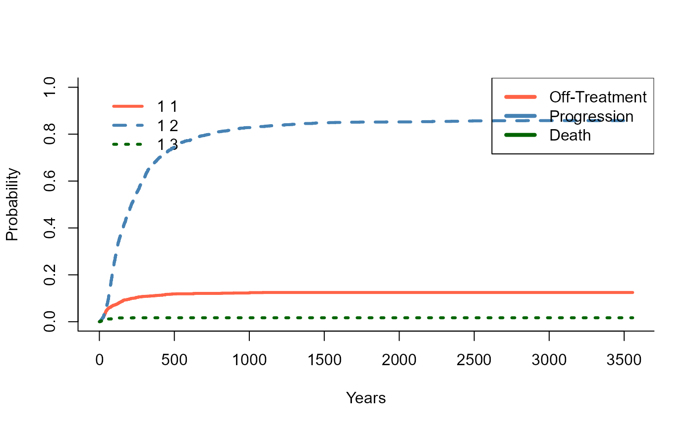
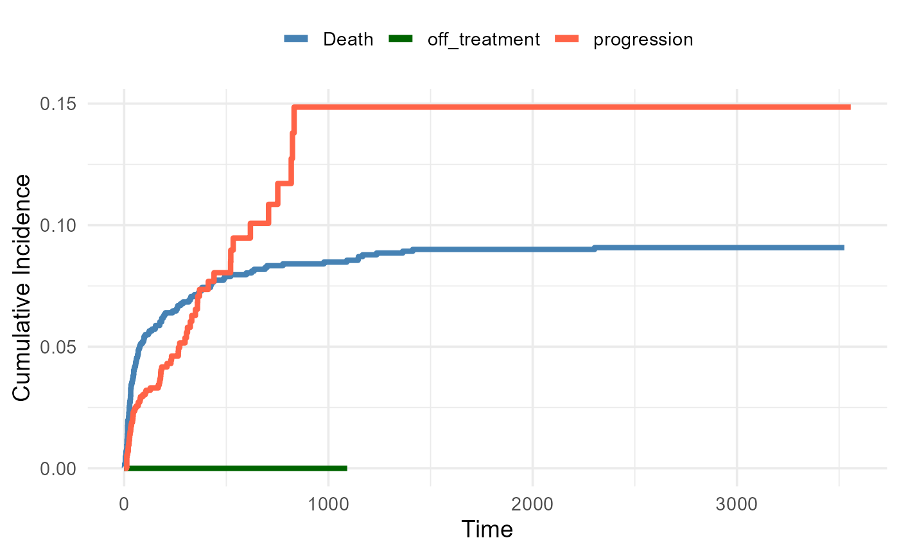
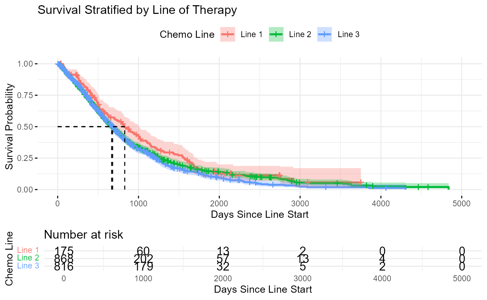

Sample Size Breakdown
## The total number of breast patients is 14162
## The total number of breast patients is 11601
## The total number of breast first-line patients is 872
## The total number of breast second-line patients is 889
## The total number of breast third-line patients is 998
##
##
## Table: Number of patients who received capecitabine by line of therapy
##
## |Line_of_Therapy | Number_of_Patients|
## |:---------------|------------------:|
## |First Line | 872|
## |Second Line | 889|
## |Third Line | 998|
## The total number of breast patients with overlapping lines that were filtered out is 2759
## The total number of breast patients with single doses that were filtered out is 2746
## The total number of breast patients with treatment start pre-2010 that were filtered out is 30
##
##
## Table: Filtered Transition Counts Table
##
## |state |next_state | n|
## |:------------------------|:-------------|----:|
## |Death |NA | 1989|
## |On_Treatment_Target_Line |Death | 42|
## |On_Treatment_Target_Line |off_treatment | 353|
## |On_Treatment_Target_Line |progression | 2201|
## |On_Treatment_Target_Line |NA | 108|
## |off_treatment |Death | 188|
## |off_treatment |progression | 126|
## |off_treatment |NA | 39|
## |progression |Death | 1759|
## |progression |NA | 568|
Descriptive statistics of episodes stratified by line and state
Summary of Episode Duration by Line and State (Excl. Death
State)
| Line 1 - On_Treatment_Target_Line |
1020 |
280.0 |
155.5 |
70.0 |
343.0 |
14 (1.4%) |
36 (3.5%) |
| Line 1 - off_treatment |
161 |
307.6 |
90.0 |
26.0 |
368.0 |
77 (47.8%) |
22 (13.7%) |
| Line 1 - progression |
871 |
640.6 |
433.0 |
167.0 |
872.5 |
656 (75.3%) |
215 (24.7%) |
| Line 2 - On_Treatment_Target_Line |
868 |
247.7 |
145.0 |
76.0 |
289.2 |
16 (1.8%) |
35 (4%) |
| Line 2 - off_treatment |
96 |
183.8 |
46.0 |
19.8 |
236.8 |
57 (59.4%) |
8 (8.3%) |
| Line 2 - progression |
752 |
552.6 |
376.5 |
165.0 |
665.5 |
569 (75.7%) |
183 (24.3%) |
| Line 3 - On_Treatment_Target_Line |
816 |
233.1 |
151.5 |
76.0 |
307.0 |
12 (1.5%) |
37 (4.5%) |
| Line 3 - off_treatment |
96 |
227.8 |
54.5 |
23.0 |
324.8 |
54 (56.2%) |
9 (9.4%) |
| Line 3 - progression |
704 |
491.6 |
349.5 |
164.2 |
672.8 |
534 (75.9%) |
170 (24.1%) |
| Overall - On_Treatment_Target_Line |
2704 |
255.5 |
151.0 |
75.0 |
314.0 |
42 (1.6%) |
108 (4%) |
| Overall - off_treatment |
353 |
252.2 |
67.0 |
23.0 |
326.0 |
188 (53.3%) |
39 (11%) |
| Overall - progression |
2327 |
567.1 |
381.0 |
165.0 |
735.5 |
1759 (75.6%) |
568 (24.4%) |
Cut-points
Cumulative incidence functions of transitions out of each health
state
Exit from on-treatment

Exit from progression

Exit from Off-treatment

Restricted mean survival time survival: comparisons across
lines
Restricted Mean Survival Time Comparisons Between Lines of
Therapy
| 3 vs 2 |
1.70 |
-36.86 |
40.25 |
0.9313 |
685.42 |
687.12 |
| 3 vs 1 |
66.55 |
29.15 |
103.94 |
0.0005 |
685.42 |
751.97 |
| 2 vs 1 |
64.85 |
28.08 |
101.62 |
0.0005 |
687.12 |
751.97 |
KM curve: time to death (overall survival)

KM curve: time to death (stratified by line)

Competing Risks Regression
## Competing Risks Regression
##
## Call:
## crr(ftime = fg_data$ftime, fstatus = fg_data$fstatus, cov1 = model.matrix(~factor(fg_data$group))[,
## -1])
##
## coef exp(coef) se(coef) z p-value
## factor(fg_data$group)2 0.3016 1.35 0.366 0.825 0.41
## factor(fg_data$group)3 0.0802 1.08 0.393 0.204 0.84
##
## exp(coef) exp(-coef) 2.5% 97.5%
## factor(fg_data$group)2 1.35 0.740 0.660 2.77
## factor(fg_data$group)3 1.08 0.923 0.501 2.34
##
## Num. cases = 2596
## Pseudo Log-likelihood = -330
## Pseudo likelihood ratio test = 0.72 on 2 df,